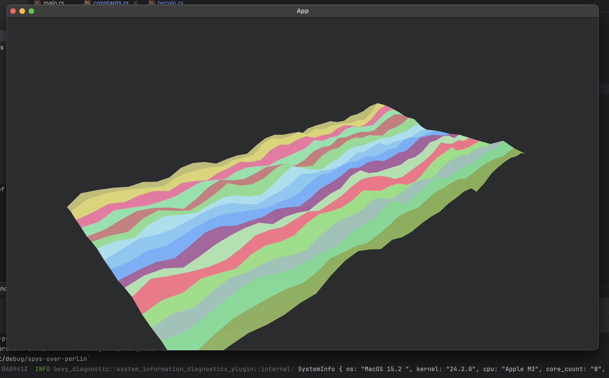
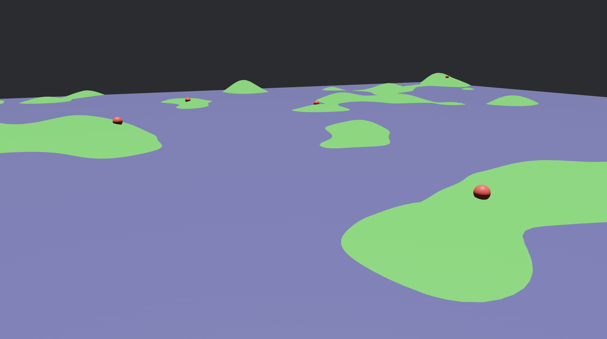

At the moment, this is a learning project to sharpen up my Rust 🦀 skills and learn the Bevy engine. There are aspirations of a rudimentary AWACS simulation / LiDAR ground scan at the very least.
Currently, terrain generation (and rendering) is mostly implemented from scratch. Ground-target spawning is implemented.
Terrain generated from 3 frequencies of Perlin noise and drawn as triangle strips.

